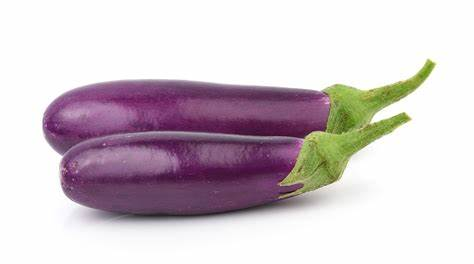

1. Seasons for Growing Brinjal

Brinjal, also known as Eggplant or Aubergine, is a warm-season crop that grows well in tropical and subtropical regions. The best seasons for growing Brinjal are:
- Summer: Brinjal is typically planted during the summer season when the weather is warm and sunny.
- Monsoon: In regions with reliable monsoon rainfall, Brinjal can also be planted with the onset of the rainy season.
- Post-Monsoon: Brinjal can also be grown post-monsoon in areas where the weather remains mild, with good irrigation.